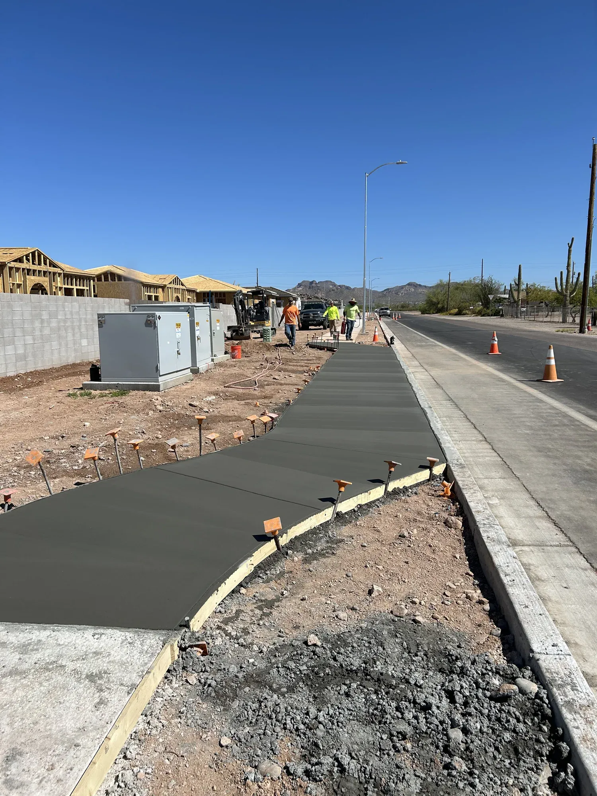

Curb and gutter contractor in Mesa, AZ
Curb and gutter guides water along the street and protects the edge of the pavement. Bridge Concrete pours curb and gutter, roll curb and approaches in Mesa and across Mesa and the East Valley, formed to the line and grade on the plans.

- Licensed, bonded and insured
- ROC #348650
- Free estimates
- 4.3 stars from 6 Google reviews
What's included.
Curb and gutter only works if water actually runs where it is supposed to. The line and grade have to be right the whole length, or water sits in low spots. Work in the public right of way is usually permitted by the city and inspected, so the details follow the plans and local standards.
- Curb and gutter
- Roll curb approaches
- Driveway approaches and aprons
- Forms set to line and grade
- Work for new builds and site concrete
How we do it.
-
Confirm line and grade
Check the plans and set the line and elevations.
-
Form it
Set forms and prepare the base along the full run.
-
Pour and finish
Place the concrete and finish the face and top clean and consistent.
-
Strip and cure
Cure the concrete, then remove the forms and check the grade.
When you need curb and gutter.
If any of these sound familiar, the sooner someone looks at it the cheaper it usually is to fix.
- A new build or site needs curb and gutter to the plans
- A driveway needs a roll curb approach
- Water pools along an existing curb line
- A project needs site concrete tied to the street
Recent work.

Curb and gutter questions.
What is a roll curb?
A roll curb has a sloped, rounded face that a car can drive over, which makes it a common choice for driveway approaches.
Do I need a permit?
Work in the public right of way usually needs one from the city. Check with your city or builder; we build to the plans.
Do you do it for new builds?
Yes. Curb and gutter is part of our site concrete work.
Need curb and gutter poured to plan?
Call us, or send the details and we'll call you to talk through your project.